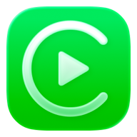
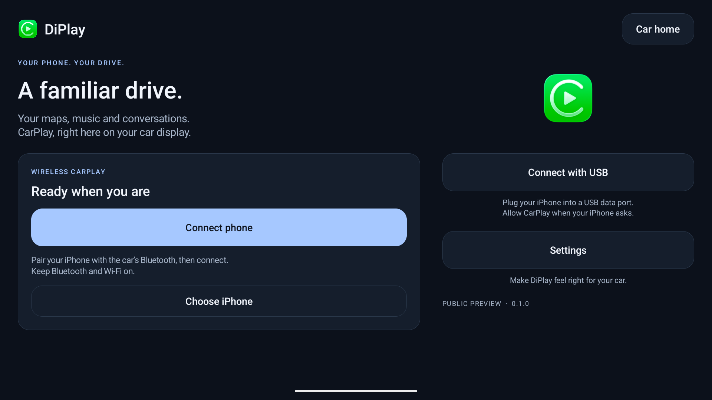
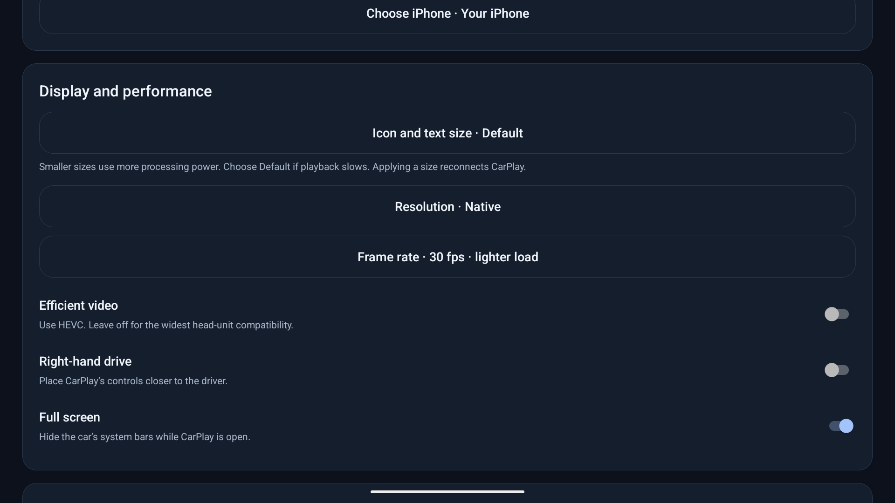

iPlaySideStore CarPlay head-unit projectYour iPhone.
Running its own CarPlay.
iPlay turns an iPhone into a CarPlay head unit. Its main A→A mode routes the phone's own CarPlay session back into the same iPhone through LocalDevVPN and trusted Remote Pairing, then renders it inside the iPlay IPA.
Built for SideStore. A→A is the primary target; A→B receiver mode is secondary.
Install iPlay on the iPhone with SideStore, keep LocalDevVPN enabled, pair the app with the same iPhone when prompted, then start Local CarPlay. The receiver and control stack run inside the IPA.
Current development is focused on iPhone A → A through SideStore + LocalDevVPN. iPhone A → B is secondary while the same-device path is stabilized.
The receiver experience




Install on your iPhone
- Download the unsigned iPlay IPA from the latest green iOS build and install it with SideStore.
- Enable SideStore's LocalDevVPN / local pairing tunnel before opening Local CarPlay.
- Open iPlay and choose Local CarPlay (A → A). On first use, complete the Remote Pairing prompt so iPlay can reach this same iPhone through the trusted RSD tunnel.
- Keep iPlay in the foreground while the local CarKit service, wired iAP2 session and embedded AirPlay receiver start. CarPlay should then render back inside iPlay.
No external head unit is required for A→A. The same-device path uses LocalDevVPN, Remote Pairing/RSD, the CarKit service, wired iAP2 control and iPlay's embedded AirPlay receiver.
iOS / SideStore implementation notes ↗In this build
- A→A is the main mode: the source iPhone and the iPlay head unit are the same physical device.
- NFCARD/AirCard-style LocalDevVPN and Remote Pairing are embedded into the SideStore build.
- Trusted RSD opens com.apple.carkit.service.shim.remote on the same iPhone.
- The local controller performs wired iAP2 identification and CarPlay session negotiation.
- The AirPlay/CarPlay receiver runs in-process inside the IPA and waits for port 7000 readiness before starting A→A.
- H.264 CarPlay video, audio handling, encrypted control/event channels and touch/HID return are included in the receiver core.
- Experimental display negotiation supports up to 120 FPS presentation while source-frame capability remains device/session dependent.
- The IPA is arm64 and deliberately unsigned so SideStore can sign it at install time.
- Private CarKit/APTransport paths remain runtime-loaded fallbacks; the preferred A→A route does not depend on the entitlement-gated CARSessionRequestClient.
- A→B remains available as the secondary receiver mode for another iPhone.
Before you try it
This is an experimental community build, not an Apple-certified CarPlay head unit. A successful compile does not guarantee every iOS build will accept the same-device CarKit/iAP2 path. LocalDevVPN must be working, first-run pairing must complete, and Apple can change private services between iOS releases.
Source & latest builds
Development, commits and unsigned IPA artifacts are published on GitHub.
Updates & signing
The distributed file is intentionally unsigned. Install or refresh it through SideStore. Keeping the same bundle identifier preserves the normal SideStore app identity across builds.